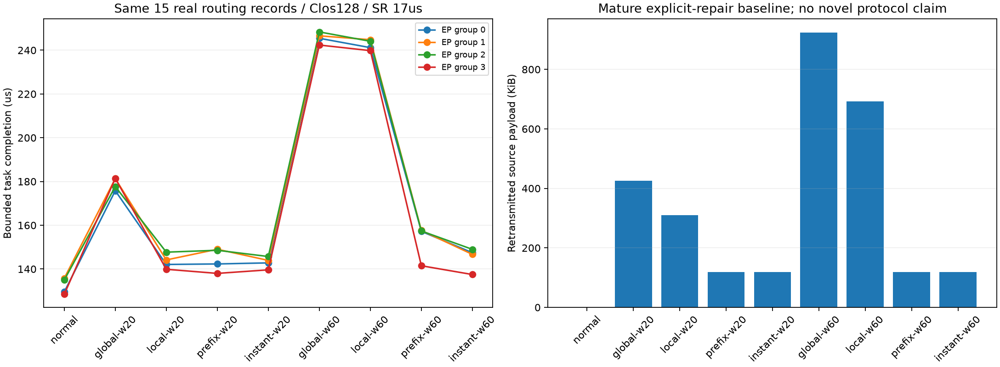
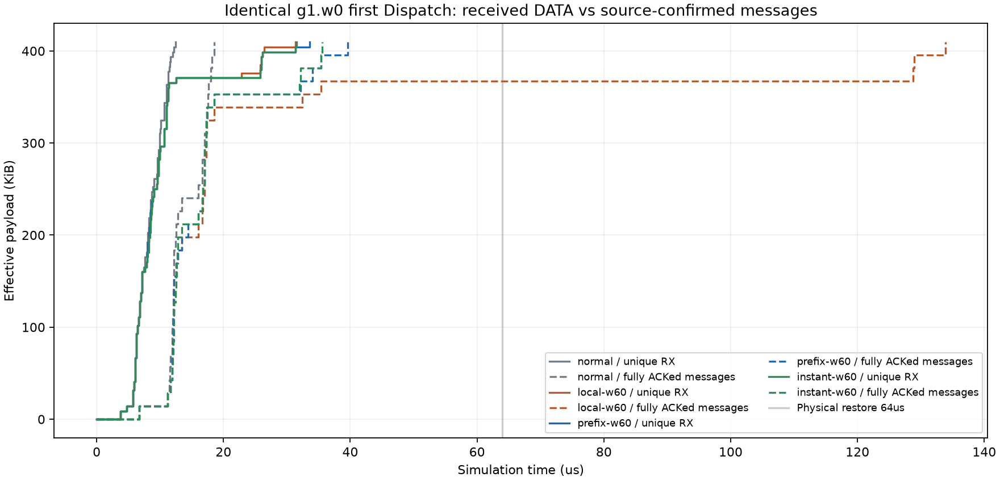

Clos128 · 15份真实专家选择 · 四组EP32 · 选择性重传始终开启
中断20µs时，最晚任务由147.706µs变为149.028µs，反而延后1.322µs（0.90%）；原故障额外等待增加11.08%。显式头部逐物理跳合计增加2,356B；相对local总线上字节变化-906,264B。
中断60µs时，最晚任务由244.806µs变为157.628µs，减少87.178µs（35.61%），收回原故障额外等待的79.96%。显式头部逐物理跳合计增加6,536B；相对local总线上字节变化-2,267,440B。
以上是成熟方法的收益，不能算新协议创新。

| 条件 | 最晚任务µs | 排空µs | 源重传B | 封装逐跳B | 队列峰值B |
|---|---|---|---|---|---|
| normal | 135.773 | 151.868 | 0 | 0 | 142,216 |
| global-w20 | 181.405 | 197.675 | 435,848 | 0 | 142,216 |
| local-w20 | 147.706 | 147.706 | 318,208 | 0 | 142,216 |
| prefix-w20 | 149.028 | 165.813 | 121,176 | 2,356 | 142,216 |
| instant-w20 | 145.711 | 163.100 | 121,176 | 0 | 142,216 |
| global-w60 | 248.362 | 265.280 | 945,944 | 0 | 142,216 |
| local-w60 | 244.806 | 244.806 | 708,736 | 0 | 142,216 |
| prefix-w60 | 157.628 | 205.784 | 121,176 | 6,536 | 170,064 |
| instant-w60 | 148.983 | 148.983 | 121,176 | 0 | 142,216 |

详细说明 · 统计 · 逐包核验 · 机制与曲线原始见证 · 正常核对 · 故障核对
# 真实MoE路由：补足成熟绕行基线后，还剩多少等待 中断20µs时，最晚任务由147.706µs变为149.028µs，反而延后1.322µs（0.90%）；原故障额外等待增加11.08%。显式头部逐物理跳合计增加2,356B；相对local总线上字节变化-906,264B。 中断60µs时，最晚任务由244.806µs变为157.628µs，减少87.178µs（35.61%），收回原故障额外等待的79.96%。显式头部逐物理跳合计增加6,536B；相对local总线上字节变化-2,267,440B。 这是已有绕行方法的收益，不能算新协议创新。正常参考为135.773µs。prefix-w60距正常仍21.855µs，距零延迟全局参考为+8.645µs；这些参考差距不是已证明可消除的收益。 ## 实验究竟在做什么 128个仿真GPU端点、20台交换机的Clos，4个交错EP32组，15份不同DeepSeek-R1-AWQ/MMLU真实专家选择文件，每份作为一个请求，组内4/4/4/3请求。256专家/组、8专家/rank，层3/4、两个单token Decode步。原选择重建消息与依赖，所有组在同一个原生RDMA ns-3时钟及网络状态下执行。计算为声明成本、payload为功能标记；不是完整671B、现代DeepEP实现、GPU实测或128卡满载。 同一128–132交换机边在4µs关闭，分别在24/64µs恢复。normal不注入故障；global等待60µs全局通知；local额外立即剔除原ECMP坏出口；prefix在原候选全失效时携带显式两跳段132→129→133，到133拆封后沿旧安全后缀到目标。instant为零延迟全局改表参考。所有条件都有17µs初始RTO的选择性重传、参考DCQCN及原ACK/集合门限，不因数据先到就提前释放。 只有4个新网络：normal、local-w60、prefix-w20、prefix-w60。前两个完整原始输出除加载库路径外与旧同条件一致；另外5行只读复用旧结果。各新网络一次，没有重复成功网络，没有构建或改平台。 ## 完成时间与代价 | 条件 | 最晚任务µs | 网络排空µs | 源重传payload B | 封装逐跳B | 交换机队列峰值B | |---|---:|---:|---:|---:|---:| | normal | 135.773 | 151.868 | 0 | 0 | 142,216 | | global-w20 | 181.405 | 197.675 | 435,848 | 0 | 142,216 | | local-w20 | 147.706 | 147.706 | 318,208 | 0 | 142,216 | | prefix-w20 | 149.028 | 165.813 | 121,176 | 2,356 | 142,216 | | instant-w20 | 145.711 | 163.100 | 121,176 | 0 | 142,216 | | global-w60 | 248.362 | 265.280 | 945,944 | 0 | 142,216 | | local-w60 | 244.806 | 244.806 | 708,736 | 0 | 142,216 | | prefix-w60 | 157.628 | 205.784 | 121,176 | 6,536 | 170,064 | | instant-w60 | 148.983 | 148.983 | 121,176 | 0 | 142,216 | “封装逐跳B”仅统计实际发送中的新增头部；总线上字节还受重传、路径跳数和反馈数量影响。队列峰值来自原生交换机BEgressQueue完整钩子记录，不包括NIC ACK队列，不是排队积分。物理及本地丢弃事件也不是端到端唯一丢包率。 各组相对同窗口local提前量（正数提前，负数变慢）： | 故障窗口µs | 组0µs | 组1µs | 组2µs | 组3µs | |---|---:|---:|---:|---:| | 20 | -0.238 | -4.878 | -0.853 | +1.885 | | 60 | +83.987 | +87.178 | +86.700 | +98.324 | 所有组都可能共享受损链路，不预设其他组完全健康。变化同时含避免丢弃、绕行竞争和后续相位变化，不能把组间差直接说成排队干扰的因果收益。 ## 用真实ACK解释此前的等待 同一个消息3983（1→65，14,464B），旧local-w60的DATA在26.170µs已到，但ACK因原候选只剩坏出口而丢弃，最终133.846µs确认。prefix-w60中，该消息在25.989µs接收完成、33.999µs获得真实源ACK。 同消息确认提前99.847µs；该组首Dispatch实际提前94.274µs，后续组内跨度再变化-7.096µs，共使组1提前87.178µs。保留所有并列末前驱，不把不同最终组的全局最大差归因给一条消息。 到达曲线固定同一个g1.w0首Dispatch，共29消息、419,456B。实线按目的端真实RX与字节区间去重；虚线在消息收到完整源ACK后计入整条消息字节，不是逐字节ACK。原始包、重试、实际ACK路径及各门限末前驱见mechanism.json。 ## 对创新方向意味着什么 先把“已有方法能做到什么”补足，再评价新方案。封装和绕行不是本轮创新；任务完成差也不能直接推成生产收益。下一步应从剩余实际丢失、源重试退避以及替代路径竞争中寻找可解释、可干预的等待，再检验MoE任务进度能否指导有限恢复资源分配。若成熟基线已解释主要空间，就收敛或放弃原假设，不能削弱基线保留收益。 项目内IPv4协议250携带实际38B封装，经过真实队列和链路序列化；不是标准RoCE/MPLS/TI-LFA实现。没有硬件故障检测、处理、路径分发与MTU碎片校准。两种本地策略均假设立即检测。没有256/512新网络、完整模型或硬件性能结论。HTML完成静态检查后交付，不声称真实浏览器渲染；PNG单独检查。
# 进一步核查：为什么少重传仍会更慢 这是取得四个新网络结果后的诊断，不是事前选定的收益假设；没有改输入或新增网络。原始逐包见证与源码hash见[path_diagnosis.json](path_diagnosis.json)。 ## 短故障的退化包含计时器行为 同一消息4000（5→9）的第二段DATA在各条件中都有实际丢弃记录。local-w20没有及时收到第一段的ACK，18.030µs按原期限重试两段，26.868µs全部确认。 prefix-w20保住第一段ACK，12.124µs确认前9,000B。当前后端的发送端计时器会在确认前缀推进后，把剩余数据的超时期限设为“当前时刻+17µs”，因此原18.030µs期限变为29.124µs。它只重试缺失的5,464B，却直到37.568µs才确认全部数据。这个样本中，较早收到部分确认会推迟另一段丢失数据的重试。 不能把这10.700µs全部算成任务退化：旧local首Dispatch还要等其他消息至35.384µs，已有8.516µs余量，所以该集合门限实际只晚2.184µs。最终组1晚4.878µs；与旧全局最晚组2相比，最终最大值只晚1.322µs。 再核算同一最终消息23406：它的ready晚4.560µs，末DATA在交换机中多停留0.318µs，其他分项相同，恰好解释组1的4.878µs差。不能把整段差都写成新绕路包的排队。 ## 长故障剩余差距怎样组成 prefix-w60与instant-w60的首Dispatch末前驱都是消息4000。第一段ACK在prefix中晚2.003µs到，实际超时重试也晚2.003µs；补发末DATA的路径耗时相同，最终ACK路径多2.004µs，因此首Dispatch恰晚4.007µs。instant是理想全局改表参考，没有部署检测成本，不能当成可实现最优值。 最终组1的末前驱在prefix中变为消息23531（93→9）。对比instant中的同一消息：ready晚9.443µs，末DATA交换机驻留多2.081µs，其他消息内分项相同；再扣instant门限已有的0.589µs余量，得到组1最终晚10.935µs。全局最晚差8.645µs涉及不同最终组，不能直接混用。 末DATA驻留从0.377增至2.458µs，prefix中最大的等待在节点142端口5，为1.812µs；逐包发送记录表明这些等待区间都由DATA实际占线覆盖，没有未解释空白。这里只证明所选末包的实际等待及占线，不证明都是重传造成，也不证明调整该队列就能消除等量任务时延。 ## 下一步真正需要验证的方向 1. 先核对目标RoCE设备如何对部分ACK和缺口计时：当前是项目内QP级计时器，不能把模型行为直接当成所有网卡的缺陷。任何按段计时或已有快速丢包检测都应作为成熟对照，不能直接命名为创新。 2. 在较强恢复基线上，研究能否利用MoE集合完成所缺的贡献，安排有限的恢复发送机会，避免把资源优先给不影响门限的重传。重点验证任务提前和其他组退化，同时限制额外字节；目前尚未实现或验证此策略。 3. 不能承诺收回prefix距normal的全部21.855µs。它混合真实故障损失、计时器、替代路径和后续共享竞争；需要逐项可干预对照。